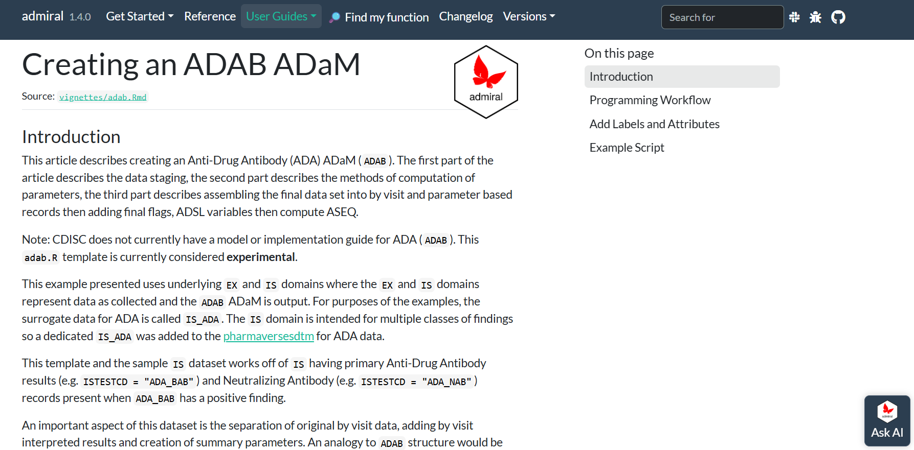

admiral 1.4 is here! Read this blog post to learn more about the contents of this release.
ADaM
Authors
Jeff Dickinson
Ben Straub
Edoardo Mancini
Published
January 15, 2026
admiral 1.4 is here!
There’s nothing like a new {admiral} release to start the new year with a bang, and that’s exactly what we have for you with {admiral} 1.4! This release comes packed with few choice updates and some exciting new features (including our first AI integration!) that will undoubtedly improve your experience creating ADaMs in R. However, in line with our commitment to stability and maturity, we have once again reduced the number of breaking changes to an absolute minimum. Take a look at the rest of the blog post below to learn more about what to expect in {admiral} 1.4.
TLDR: What is in this release?
{admiral} has partnered with kapa.ai to introduce an AI-powered chatbot within every page of our websites.
We have added our first experimental functions: derive_var_nfrlt() and convert_xxtpt_to_hours(). These simplify time point and visit derivations.
There is a new ADAB template script and correspondingly new vignette. These will aid in creating Anti-drug Antibody Analysis Datasets
Several existing parameter derivation functions have been updated for greater robustness.
All the {admiral} templates can now be viewed directly from our website within the new Explore ADaM Templates.
{admiral} is now integrated with NCI-CTCAE version 6.0 lab grading criteria for both SI and US units, with all grading metadata now maintained in a more readable JSON format for improved consistency and maintainability.
derive_var_atoxgr_dir() received a small breaking change: the abnormal_indicator argument was replaced by low_indicator and high_indicator to support the updated CTCAE v6.0 criteria.
derive_var_merged_summary() has been renamed to derive_vars _merged_summary() to align with programming conventions.
Please peruse the Changelog to see the full set of updates in {admiral} 1.4.
Let’s take a few deep-dives to explore some of these updates in more detail.
Deep dive 1: kapa.ai integration
We are thrilled to announce that {admiral} has partnered with kapa.ai under their Open Source Program to introduce an AI-powered chatbot within every page of our website. This LLM chatbot is trained using the documentation pages of {admiral} and all our therapeutic area extension packages as well as the {pharmaversesdtm} and {pharmaverseadam} data packages and the ADaM IG. Indeed, look out for it to be added to every other package in the {admiral} ecosystem in their upcoming releases this month. To use the chatbot, simply click on the “Ask AI” button at the bottom right corner of any website page and start asking away - you may find that you get redirected to a User Guide, a function reference page or the website of another {admiral} package that you didn’t even know existed!
Deep dive 2: Experimental functions!
Experimental functions are a new class of functions, tagged with the “Experimental” badge. This is our way of adding targeted, new functionality that we can quickly improve/modify without breaking our commitment to stability. The badge will be removed once the dev team feels the function is stable, and no deprecation messages will be given to the user if breaking changes are implemented before removing the experimental badge. However, {admiral} will document the breaking change in the Changelog. Once the “Experimental” badge is removed we will proceed with the normal deprecation cycle if needed.
Our first experimental functions help derive variables for time-point analysis. One such variable is NFRLT (Nominal Relative Time from First Dose), which is used extensively in pharmacokinetic analysis. This is the namesake variable for derive_var_nfrlt(). This function can be used to directly derive NFRLT in the Pharmacokinetic Concentrations (PC) domain and in the Exposure (EX) domain. These domains are typically combined to form the Pharmacokinetic Concentrations Analysis Data (ADPC). Under the hood of this function is convert_xxtpt_to_hours(), which converts timepoint variables such as PCTPT to numeric hours using regular expressions. The hours computed from convert_xxtpt_to_hours() are combined with the days from a visit variable such as VISITDY to derive NFRLT. Note that the unit variable FRLTU can also be derived, and there are multiple output unit options (hours, days, weeks, minutes).
The functions can work with any time-point variables from other domains such as LB, VS or ’EG`. There a is also a treatment duration option in the case of infusions and an option for time point ranges such as “4-8H AFTER END OF INFUSION”.
Deep dive 3: Anti-drug-antibody template and vignette
{admiral} 1.4 introduces a new ADaM template script to aid in creating Anti-drug Antibody Analysis Datasets (ADAB). This template is accompanied by a detailed vignette that walks you through the process of deriving key variables and implementing analysis strategies specific to anti-drug antibody data, including the use of one of our new experimental functions derive_var_nfrlt(). The template covers common scenarios encountered in immunogenicity assessments, providing a solid foundation for users to build upon and customize according to their study requirements.

As usual, to use start using the template you can run:
use_ad_template("adab")
…or you can peruse the template directly from the website from our new Explore ADaM Templates page.
What’s coming in admiral 1.5?
{admiral} is very much community driven, so please continue reaching out through Slack or GitHub if you have ideas or requests for enhancements to our package. {admiral} 1.5 is due to release in June 2026, and some current ideas for new content include improved Estimands documentation and ways to enable positive censoring within TTE derivations.
@online{dickinson2026,
author = {Dickinson, Jeff and Straub, Ben and Mancini, Edoardo},
title = {Admiral 1.4 Release},
date = {2026-01-15},
url = {https://pharmaverse.github.io/blog/posts/2026-01-15_admiral_14/admiral_1.4_release.html},
langid = {en}
}